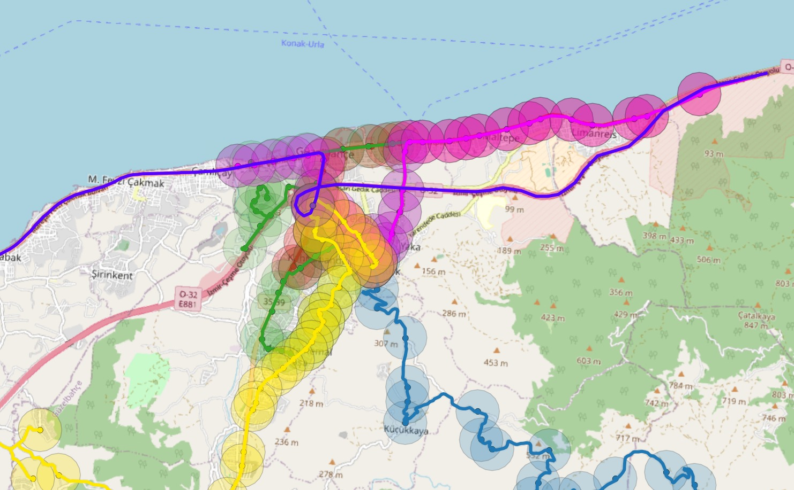

Güzelbahçe Ulaşım ve Altyapı Analizi
Bu sayfa, sitedeki ulaşım ve altyapı verilerinin kısa bir özetidir: toplu taşıma hatları, karayolu trafiği, su ve elektrik altyapısı ile planlanan projeler.
Aşağıdaki her kart ilgili sayfaya bağlanır. Kartlardaki sayılar, o sayfalarda yer alan verilerin aynısıdır.

Öne çıkan veriler
Ayrıntı için karta tıklayın
Ulaşım
Toplu taşıma, karayolu ve otopark verileri
Adnan Menderes
Aylık yolcu trafiği ve havalimanından Güzelbahçe'ye ulaşım alternatifleri
ESHOT
Aylık günlük ortalama biniş istatistikleri, hat güzergahları ve durak erişim çapları
Dolmuş
Güzelbahçe'ye hizmet veren dolmuş güzergahları ve 800 m erişilebilirlik çapları
Tramvay
Karşıyaka, Konak ve Çiğli hatları toplam yolcu trafiği (2020 - 2024)
İZBAN
İzmir banliyö sistemi yıllık kullanım istatistikleri (2010 - 2015)
Vapur (İzdeniz)
17 vapur hattı günlük yolcu sayıları (2020 / 2025 / 2030 projeksiyonu)
İzmir Metro
Yıllık toplam biniş sayıları ve planlanan metro hattı
Ulaşım Karşılaştırması
Tüm toplu ulaşım ağlarının İzmir geneli yıllık yolcu dağılımı
KGM Karayolları
2025 yıllık ortalama günlük trafik (YOGT), kapasite ve doluluk karşılaştırması
Otoparklar
Park Et ve Devam Et (P+R) ile Öp ve Geç (K+R) uygulamaları ve Güzelbahçe örnekleri
Altyapı
Su ve elektrik şebekeleri
İZSU Su Kaynakları
Baraj doluluk oranları, su kaynakları listesi ve su altyapısı metrajı
Elektrik Altyapısı
Trafo merkezleri, orta gerilim hatları ve dağıtım trafoları
Planlama ve analiz
Projeler, ilişki diyagramları ve katkı verenler